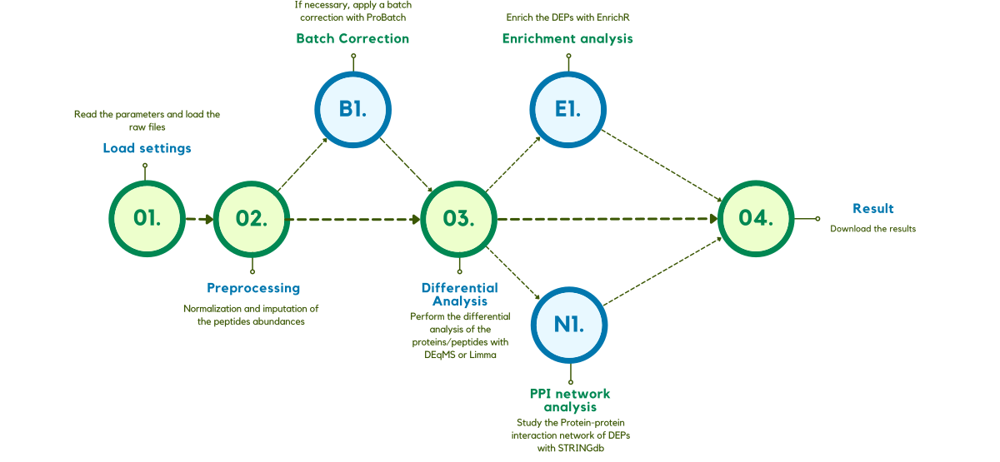
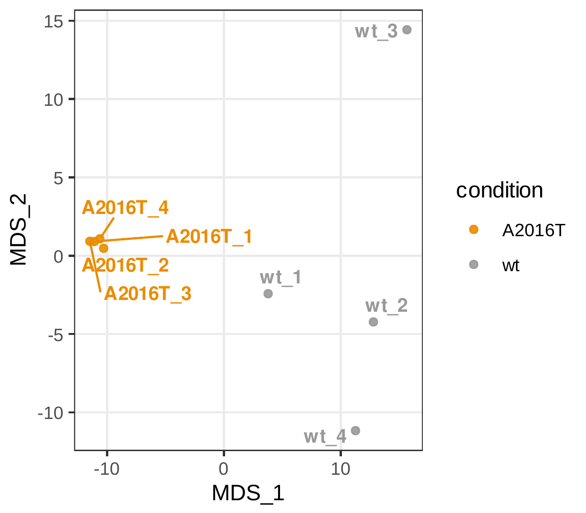
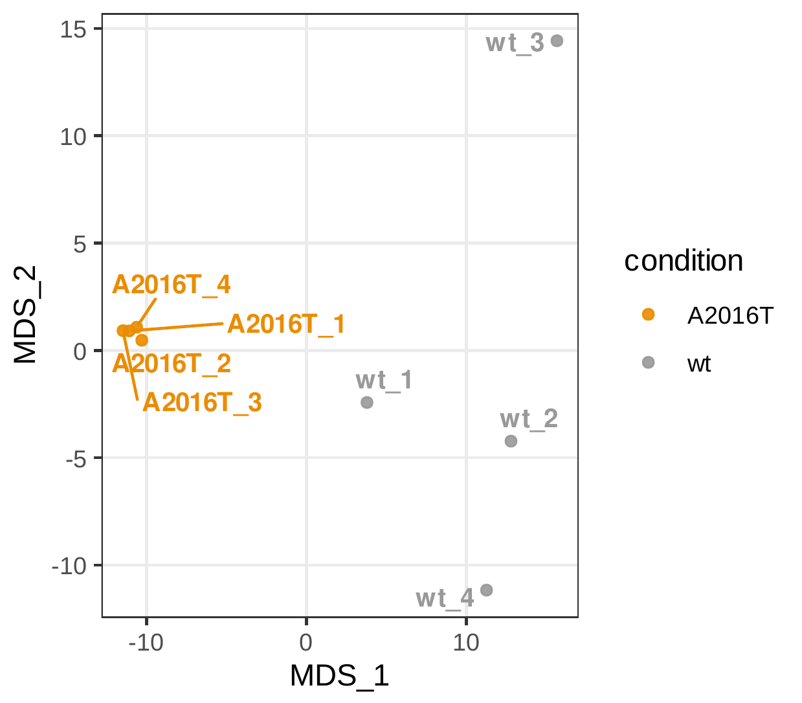
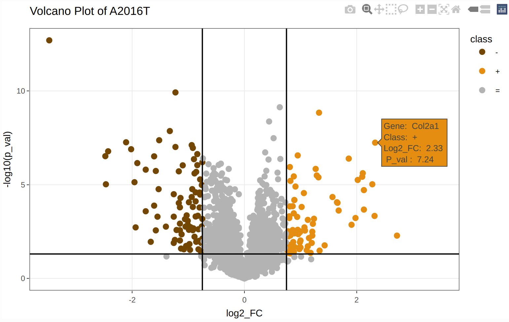
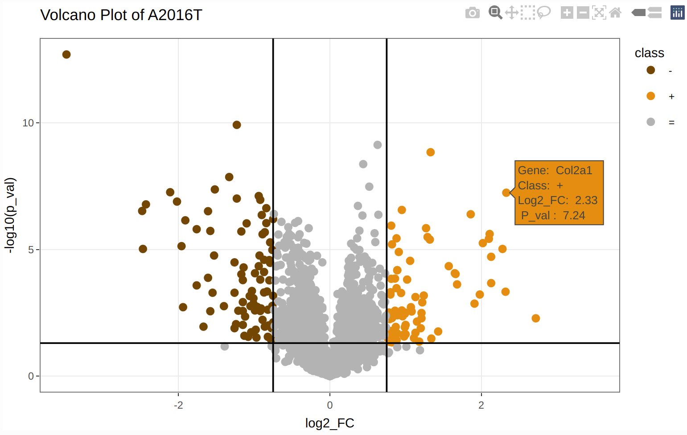
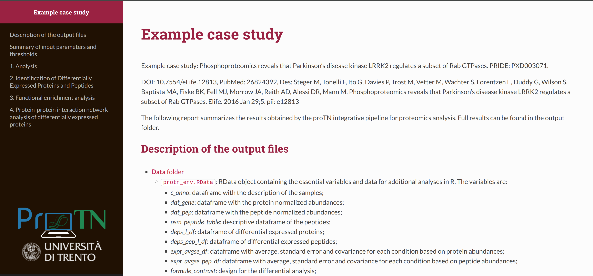

-
1. Workflow of ProTN
Later in this section we describes in details the workflow of the pipeline. In the first phases it imputes and normalizes the data obtaining the normalized matrix. On that is perfomed the enrichment, the PPI network analysis and the kinase tree analysis. During the enrichment steps, the only protein analyzed are the up- or down-regulated, discriminated by the parameters set.
01. Set settings for the execution and read the raw data from loaded files
ProTN analyse the results of Proteome Discoverer and MaxQuant. The essential parameters and files to run ProTN are: (additional details on the input can be found in section 2. Details on the input parameters and files)
-
Title of Analysis: title of the experiment. It will be the title of the web page report. -
Software Analyzer: determine with software was use to identify peptides and proteins. PD for Protein Discoverer, MQ for MaxQuant. -
Sample Annotation file: file with the information about the samples and the correlation between replicate ID and condition. (WARNING: Condition name MUST contain at least 1 character!) -
Peptides file: raw file of peptides obtained from PD or MQ (file peptides.txt). -
Proteins file: raw file of protein groups obtained from PD or MQ (file proteinGroups.txt). -
Design for the comparison file: Excel file containing the formulas of the contrast comparison you want to analyse.
02. Normalization and imputation of the intensities
The intensities are log2 transformed and normalized with DEqMS (Zhu 2022). Two methods are applied because a double normalization is required, one for peptides and one for proteins. At the peptide level, the normalization is done by the function equalMedianNormalization, which normalizes intensity distributions in samples so that they have median equal to 0.
At the protein level, this operation is executed by the function medianSweeping. It applies the same median normalization used for peptides, but also it summarizes the peptide intensities into protein relative abundance by the median sweeping method.
After the normalization the intensities from Mass Spectrometer need to be imputed. The principal method is based on the PhosR package (Kim et al. 2021) that performs a complex and well-balanced imputation of the data based on the conditions of the samples. As a backup method in case of problems with PhosR imputations, ProTN uses a Gaussian round imputation.
In this step, two MDSs and two PCAs (proteins and peptides) are generated.
 

03. Statistical differential analysis
The workflow continue with the differential analysis. This phase is applied to proteins and peptides, to obtain the significant proteins and peptides. Two slightly different methodologies are applyed since for proteins is used the DEqMS package (Zhu 2022), instead, for peptides is used the usual Limma package (Ritchie et al. 2015). DEqMS is developed on top of Limma, but the method estimates different prior variances for proteins quantified by different numbers of PSMs/peptides per protein, therefore achieving better accuracy.
Limma and DEqMS calculate DEPs for each comparison in the design file parameter. Each peptide or protein has different parameters: the log2 Fold Change, the P.Value, the adjusted P.Value and the log2 expression. In this pipeline, a protein/peptide is significant if passing 3 thresholds. A protein/peptide for each comparison can be Up-regulated or Down-regulated. It is Up-regulated if:
-
the log2 FC is higher than the Fold Change threshold (FC > Log2 FC thr),
-
the P.Value is lower than the threshold (P.Value < P.Value thr),
-
the log2 expression is higher than the threshold (log2 expression > Signal log2 expr thr).
It is Down-regulated if:
-
the log2 FC is lower of the Fold Change threshold (FC < -Log2 FC thr),
-
the P.Value is lower than the threshold (P.Value < P.Value thr),
-
the log2 expression is higher than the threshold (log2 expression > Signal log2 expr thr).
In the output, for each comparison, this distinction is reported in the “class” column, which assumes value “+” if is up-regulated, “-” if down-regulated and “=” if it is not significant.
Various figures are generated, first a bar plot that graphically represents the DEPs identified. Followed by comparison-specific volcano plots.
 

04. Report creation and download of the results
The results are summarized in a web-page HTML report. Other than this, the experiment is described by a large number of files, a description of each file generated can be found in section 4. Details on the output files. All the files are group in a zip file and downloaded.
ADDITIONAL STEPS:
B1. Batch Effect correction
If required by the experiment, a batch correction step can be applyed using proBatch (Cuklina et al. 2018). The batches need to be defined in the Sample_Annotation file where column MS_batch is required.
E1. Enrichment analysis of the Differentially Expressed Proteins
The biological interpretation of the Differentially Expressed Proteins starts with the enrichment step. To execute this analysis, ProTN uses EnrichR (Jawaid 2022), a widely used tool that search on a large number of data sets to obtain information about many categories. EnrichR organises its hundreds of data sets in 8 sections: Transcription, Pathways, Ontologies, Diseases/Drugs, Cell Types, Misc, Legacy, and Crowd.
Since the analysis that a user wants to perform can be different, each comparison has 3 sets of proteins: the Up-regulated (called Up), the Down-regulated (called Down), and the set (called all) obtained by the merge of Up- and Down-regulated proteins. EnrichR provides for each term much information. It returns the statistical parameters, like P.Value, fdr, odds ratio and combined score. At the same time, it gives the overlap size, the number of genes in the term and the genes of the input list find in the term.
The tons of data downloaded from EnrichR are exported in two modalities. The tool creates an RData of the complete data frame, in this way the user can easily import in R to perform further analysis and plots. But also, it generates an Excel file with only the significant terms. The process uses the filters define in the options file to differentiate the relevant terms from the globality.
A term to be significative need to have:
-
a P.Value lower of P.Value thr for enrichment (P.Value < P.Value thr for enrichment),
-
an Overlap Size higher than Overlap size thr for enrichment (Overlap Size > Overlap size thr for enrichment).
Besides that, the pipeline plots the enrichment results in different figures. The 4 plots can be split into 2 categories. The first two are filtered on the data-sets, they illustrate only the data-sets written in the column DB to analyse of the options file. The other 2 are filtered on words to search on the term description, it uses the list of words in column Terms to search.

E1.1. Enrichment analysis of the whole set of proteins discovered by the experiment
In same cases can be usefull have the enrichment of the whole proteome discovered by the experiment. For example it can be used as negative control of the differentially expressed proteins. So, the entire proteome is analysed with EnrichR, and saved in an RData and in an Excel file. Also, as before, 4 plots can be generated, in this case adding as last dot column the negative control provided by the whole proteome.
Additional details on the output can be found in section 4. Details on the output files.
N1. Protein-Protein Interaction network analysis of Differentially Expressed Proteins
Last analitical step is the Protein-Protein Interaction (PPI) network analysis, since PPIs are essential in almost all processes of the cell, and it is crucial for understanding cell physiology in different states. For each comparison, ProTN analyses the interaction between the DEPs using STRING (Szklarczyk et al. 2021).

The species-specific database is retrieved from STRING server, an accurate analysis discover all the interactions and an iGraph (Csardi and Nepusz 2006) network is generated. Later, the proteins are clustered via iGraph function which identify dense subgraph by optimizing modularity score.
Since the network can vary a lot on composition, two ggplot layout are used: Fruchterman-Reingold algorithm and the Kamada-Kawai algorithm.

-